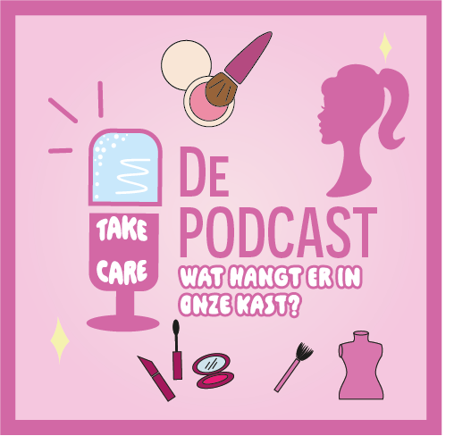
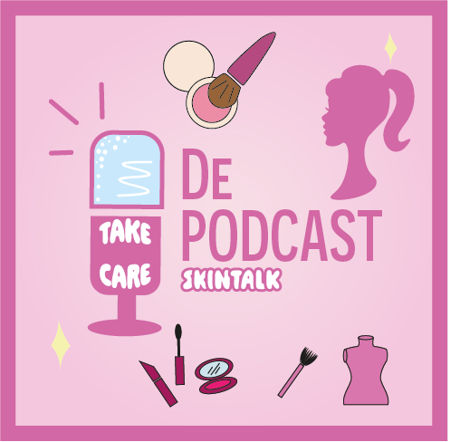
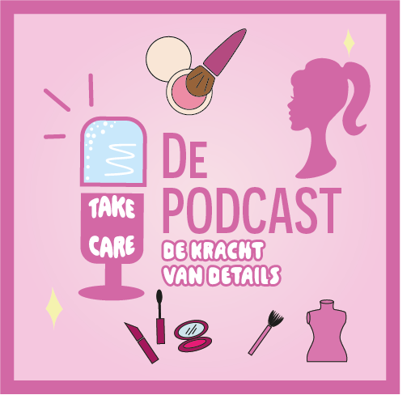
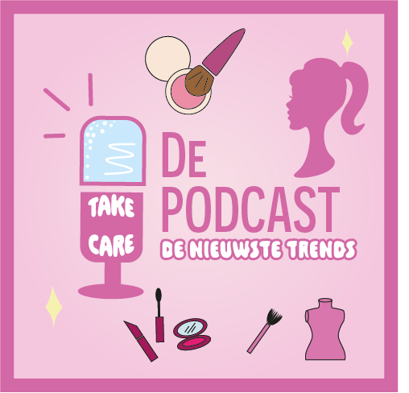

| Aflevering 1 | make up, look good |
|
In deze aflevering gaan we het hebben over make up. Elk meisje
begint vanaf de middelbare make-up te dragen, vaak weten meiden dan
nog niet hoe ze goed hun make-up mooi moeten doen en welke producten
mooi en goed voor hun huid zijn. In deze aflevering delen wij welke
producten en welke merken goed en bekend zijn. Wij delen ook onder
ander onze ervaring met bepaalde producten en merken. Ten slotte
delen we nog welke producten wij zelf gebruiken.
|
| Aflevering 2 | Wat hangt er in onze kast? |
|  |
In deze aflevering gaan we het hebben over kleding. Veel meiden
veranderen van kledingstijl door mee te gaan met trends, maar hebben
dan niet altijd hun eigen stijl. In deze aflevering hebben we het
dan over verschillende stijlen waar per stijl bijvoorbeeld een trend
is en wat voor kleding wij zelf dragen.
|
| Aflevering 3 | Skintalk |
|  |
In deze aflevering gaan we het hebben over skincare. Skincare is een
belangrijk element. Het is goed voor de huid en toch ook wel een
extraatje als het gaat om de verzorging van jezelf. We gaan onze
eigen tips, adviezen en meningen delen en onder andere de trends
bespreken over skincare.
|
| Aflevering 4 | De kracht van details |
|  |
In deze aflevering gaan we het hebben over accessoires. Wij vinden
dat accessoires echt je outfit afmaken. Je kan je outfit stijlen met
grote oorbellen of een grote riem. We gaan het hebben over wat
influencers of modellen doen. Wat voor trends er allemaal zijn die
een statement maken.
|
|
| Aflevering 5 | De nieuwste trends |
|  |
In deze aflevering gaan we het hebben over social media. Hoe
beïnvloed social media ons dagelijks leven op bijvoorbeeld uiterlijk
gerelateerd? Ook gaan we het hebben over welke platformen ons
beïnvloed en hoe en waarom ze dat doen en door wie.
|
| Aflevering 6 | Dagelijks leven met social media |
|
In deze aflevering gaan we het hebben over trends. Trends komen en
gaan snel. Daarom gaan wij PODCAST TAKE CARE jongeren op te hoogte
houden van de nieuwste trends. Ook vertellen we wat wij vroeger
trendy vonden en hoe dat weer terugkomt in bijvoorbeeld de mode van
nu.
|